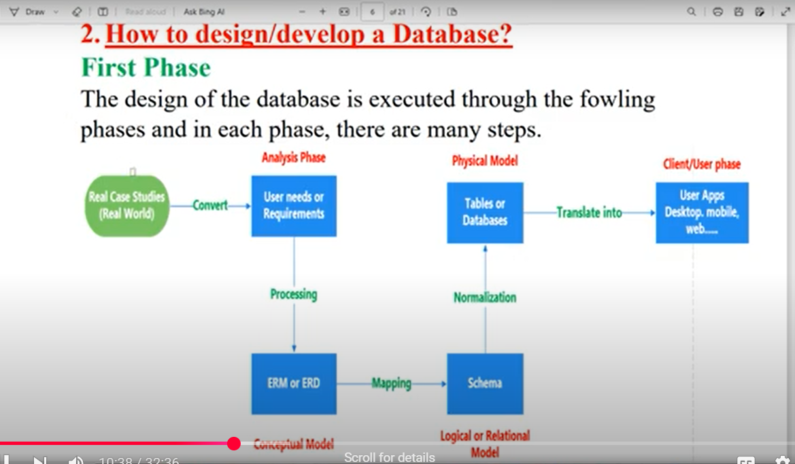

قواعد البيانات
الصورة توضح عملية تصميم وتطوير قاعدة البيانات، بدءًا من دراسات الحالة الواقعية. تتضمن المرحلة الأولى، التحليل، تحديد احتياجات ومتطلبات المستخدم، التي تتم معالجتها بعد ذلك في نموذج ERM أو ERD. يتم تحويل هذا النموذج المفاهيمي إلى مخطط منطقي أو علائقي. يخضع المخطط لعملية التطبيع قبل أن يتم تحويله إلى جداول فيزيائية أو قواعد بيانات. وأخيرًا، يتم دمج قاعدة البيانات في تطبيقات المستخدم، مثل تطبيقات سطح المكتب أو الهاتف المحمول أو الويب. يضمن هذا النهج المنظم نظام قاعدة بيانات فعال ومنظم بشكل جيد.
